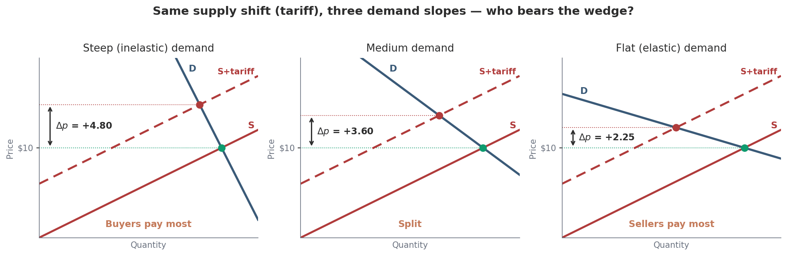
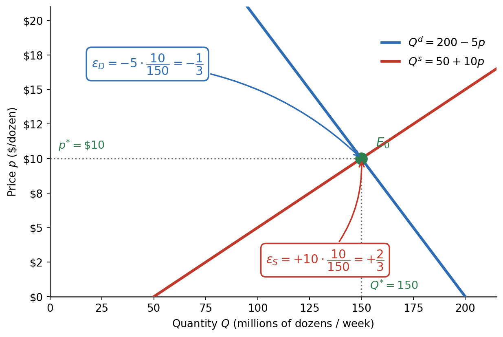
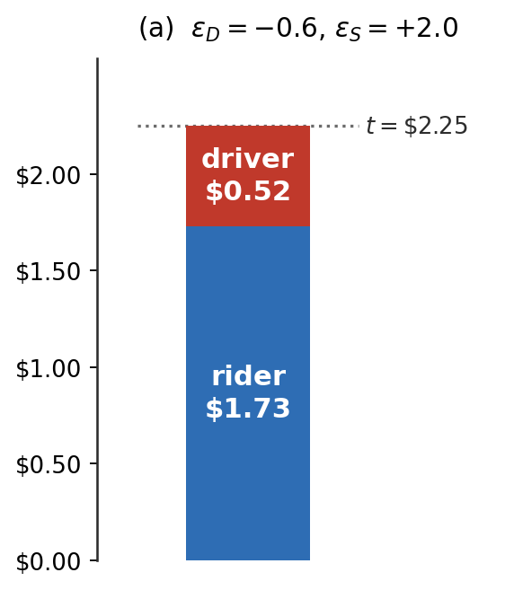
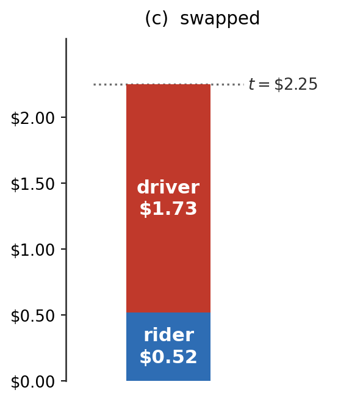

From midpoint to derivative — tax incidence, deadweight loss, and price controls in dollars.
Dr. Richeng Piao
Department of Economics
Northeastern University
Learning Objectives
By the end of class today, you will be able to…
1
Compute point elasticity \(\varepsilon=(dQ/dp)(p/Q)\).
2
Locate the elastic, inelastic and unit-elastic zones — and the revenue peak.
3
Predict who bears a tax, from the two elasticities alone.
4
Measure deadweight loss, and say why it grows with \(t^{2}\).
Math Refresher — percentage change, elasticity and first-order conditions, before today.
Review from Principles of Microeconomics
9 slides · Lifting the Principles of Micro toolkit into the Micro Theory machinery
The Tariff Question on the Front Page
Spring 2025 — the WSJ asks: who actually paid the new tariffs? Principles told us prices would rise. The front page wants a number.
Today's machine: point elasticity → incidence formula → deadweight integral.
Trump “Liberation Day” tariffs — April 2025
• Largest U.S. import-duty hike in ~80 years
• Gopinath-Neiman NBER (Jan 2026): pass-through to U.S. import prices ≈ complete
• NY Fed retail note (Mar 2026): consumer pass-through incomplete short-run, rising

What Was Elasticity? Quantity Reaction vs Price Reaction
The law of demand says quantity reacts to price. Elasticity is just how big that reaction is — the quantity reaction set against the price reaction.
Same ratio as the last slide — but there are two of them, and their signs are not the same. Both are unit-free, which is the whole reason the measure exists: you can compare eggs and petrol without dozens and litres getting in the way.
Price elasticity of demand:PED: \(\%\Delta Q^D\) for 1% \(\Delta P\)
Percentage change in quantity demanded divided by percent change in price.
Principles reported \(|\text{PED}|\) as a positive number and talked about magnitude only. From §3.1 on we keep the sign — it is doing real work, and dropping it is the single most common error on this chapter. That is Heads Up 3.1.
The elasticity spectrum
Same \(\Delta p\) in the middle two panels — only the quantity response differs. The outer two are the limiting cases.
(a) Perfectly elastic
\(E=\infty\) — horizontal
Quantity is infinitely responsive. Commodity crops, to any one farmer.
(b) Elastic
\(|\varepsilon|>1\) — shallow
A small price rise brings a large drop in quantity.
(c) Inelastic
\(|\varepsilon|<1\) — steep
A large price rise brings only a small drop in quantity.
(d) Perfectly inelastic
\(E=0\) — vertical
Quantity does not move at all. Life-saving drugs.
Reading left to right, quantity gets less willing to move. Both ends matter in §3.5: with perfectly inelastic supply the seller eats the whole tax; with perfectly elastic supply the buyer does.
Demand is far flatter: the same rise moves six times the quantity.
What ten years lets you change: buy a hybrid or an EV · move closer to work · switch to transit · take the job that lets you work from home. None of that is available on Tuesday. Gasoline elasticities from Hughes, Knittel & Sperling (2008).
§3.1 From Midpoint to Point Elasticity
Promoting elasticity from a percent-change to a derivative
Arc elasticity — the midpoint method, renamed
You already know this one. Principles called it the midpoint method; its formal name is arc elasticity.
The bars are the midpoints: \(\overline{Q}=\dfrac{Q_1+Q_2}{2}\), \(\overline{p}=\dfrac{p_1+p_2}{2}\).
Dividing by the midpoint rather than the starting value is what makes the answer the same going up as coming down — the reason Principles teaches it this way.
No calibrated curve, just two scanner observations? Then there is nothing to differentiate — average the endpoints instead.
Have a function \(Q^d(p)\)? → point elasticity.
Have two data points? → arc (= midpoint).
Why bother promoting elasticity to a derivative?
Midpoint / arc (Principles)
An average over a price segment:
"How elastic between \(p_1\) and \(p_2\)?"
Point (Micro Theory)
A derivative at one price:
"How elastic right here, right now?"
The tax-incidence formula in §3.5 needs a point elasticity at the equilibrium — the midpoint can't deliver that. Same intuition, sharper math.
\(dQ/dp\) is the quantity response — units per \$1. We draw \(p\) up the vertical axis, so this is the reciprocal of the slope you see, not the slope itself. \(p/Q\) rescales it into percentage units.
Sign matters
Law of demand: \(dQ/dp < 0\), so \(\varepsilon_D < 0\). Micro Theory keeps the sign. No absolute-value hiding.
Same vocabulary: \(|\varepsilon|>1\) elastic · \(|\varepsilon|<1\) inelastic · \(|\varepsilon|=1\) unit elastic · \(0\) perfectly inelastic · \(\infty\) perfectly elastic.
Same point, so the same \(p/Q=10/150\) for both — they differ only in \(dQ/dp\), \(-5\) against \(+10\). The ratio \(|\varepsilon_S|/|\varepsilon_D| = 2\) does most of the work in §3.5. Inelastic demand + moderately inelastic supply is the staple-food story.

Heads Up 3.1 — Our \(\varepsilon_D\) is negative
Principles often quoted \(|\varepsilon_D|\) as positive numbers. Micro Theory keeps the sign. Mix conventions and the incidence formula in §3.5 will produce negative pass-through shares — a guaranteed clue you've sign-flipped.
Translating from Principles of Micro
Principles of Micro's “elasticity 0.5” is our \(\varepsilon_D = -0.5\).
Principles of Micro's “elasticity 1.2” is our \(\varepsilon_D = -1.2\).
Sanity rule
Pass-through and burden shares should land in \([0,1]\). If you see a negative or \(>1\) result, check the sign on \(\varepsilon_D\) first.
Walkthrough 3.1 — NYC congestion: arc vs point
Problem. \(Q^d(P)=300{,}000-5{,}000P\). Compare the two elasticity measures between \(\$9\) and \(\$12\).
Same slope both times. Off the two dots, \(\Delta Q/\Delta p=-15{,}000/3=-5{,}000\) — exactly the derivative. The only difference is where you rescale: arc divides by the midpoint \(\overline{p}/\overline{Q}\), point divides by \(p/Q\) at \$12.
Check: \(-5{,}000\cdot\dfrac{10.50}{247{,}500}=-0.212\) — the arc answer, to the digit. Both sit well inside \(|\varepsilon|<1\): commuters cannot easily stop driving, which is why the toll raises steady revenue.
Calculus Corner 3.1 — Elasticity = slope of \(\ln Q\) vs \(\ln p\)
\(\varepsilon_D = \dfrac{d\ln Q}{d\ln p}\)
Chain-rule check
\(\dfrac{d\ln Q}{d\ln p} = \dfrac{1}{Q}\cdot\dfrac{dQ}{dp}\cdot p = \dfrac{dQ}{dp}\cdot\dfrac{p}{Q}\). ✓
Why empiricists love this
Run a regression of \(\ln Q\) on \(\ln p\) — the coefficient is the elasticity. Gas demand: \(\hat\beta \approx -0.2\) (Hughes-Knittel-Sperling 2008).
§3.2–3.3 Linear Demand Zones & Revenue
14 min · Where on the curve are you?
Elasticity varies along a linear demand curve
Nothing new needed — just the point-elasticity formula, read carefully.
\(Q = 40 - 5p\) at \(p = 5\):
same \(dQ/dp=-5\), \(\varepsilon_D = (-5)(5/15) \approx -1.667\)
Same \(dQ/dp\). Elasticities differ by a factor of 12. The \(p/Q\) ratio is doing all the work.
The previous slide held the curve fixed and moved along it. This one holds the price fixed and swaps the curve. Either way, \(dQ/dp\) is not what decides the elasticity — \(p/Q\) is.
Poll #1: Where on the demand curve?
Linear demand \(Q^d = 100 - 2p\). At which price is demand unit elastic?
A) \(p = 10\)
B) \(p = 25\)
C) \(p = 50\)
D) Cannot tell — need more info
60 sec to vote
Answer: B — \(p = 25\)
No shortcut needed — the definition does it in three steps.
1. Read \(dQ/dp\) straight off the demand function: \(\dfrac{dQ^d}{dp} = -2\)
2. Put \(p=25\) into the curve: \(Q^d = 100 - 2(25) = 50\)
Restaurant meals, \(\varepsilon_I \approx 1.0\) — right on the luxury edge.
\(\varepsilon_{I,i} < 0\) — Inferior
Quantity falls as income rises — buyers substitute toward something better.
MBTA Orange Line — as income rises, riders switch to cars.
U.S. food: \(\varepsilon_I \approx 0.1\)–\(0.3\). Bus travel can flip from inferior to normal at different income levels.
Income elasticity — two goods, opposite signs
\(\varepsilon_I=\dfrac{\%\Delta Q^d}{\%\Delta I}\). Income rises \(\$30\text{k}\to\$50\text{k}\) — a \(+66.7\%\) change.
Concert tickets
\(4\to 8\) a year \((+100\%)\) \(\varepsilon_I=\mathbf{+1.5}\) → luxury
Instant noodles
\(10\to 6\) a week \((-40\%)\) \(\varepsilon_I=\mathbf{-0.6}\) → inferior
Sign classifies, size ranks. Negative means inferior; above \(+1\) means luxury; between \(0\) and \(+1\) means necessity.
Cross-price elasticity
\(\varepsilon_{i,j} = \dfrac{\partial Q^d_i}{\partial p_j} \cdot \dfrac{p_j}{Q^d_i}\) — does \(i\) sell more or less when \(j\) gets pricier?
\(\varepsilon_{i,j} > 0\) — Substitutes
\(j\) gets pricier, buyers move to \(i\). Tea/coffee, iPhone/Galaxy, ride-hail/rental.
Raise the price of one console, buyers shift to the other.
\(\varepsilon_{i,j} < 0\) — Complements
\(j\) gets pricier, demand for \(i\) falls too. Printer/ink, console/games.
Console and cartridge — price up on one, demand down on both.
\(\varepsilon_{i,j}=0\) — unrelated goods, no cross-relationship at all. • Antitrust use: a large positive \(\varepsilon_{i,j}\) puts two products in the same relevant market for merger analysis.
Cross-price elasticity — and how antitrust uses it
\(\varepsilon_{i,j} = \dfrac{\%\Delta Q^d_i}{\%\Delta p_j}\) — does good \(i\) sell more, or less, when \(j\) gets pricier?
This number decides merger cases. A high \(\varepsilon\) between two products means they compete — so they sit in the same market, and the merger gets scrutiny.
§3.5 Tax Incidence by Total Differentiation
14 min · The wedge equation
People respond to incentives — elasticity says how much
One price rise fires two incentives at once.
Buyers — a penalty
Quantity demanded falls. How much? \(|\varepsilon_D|\).
Sellers — a reward
Quantity supplied rises. How much? \(\varepsilon_S\).
Elasticity is the strength of the response — which is why §3.5 can predict who bears a tax from those two numbers alone.
A tax is an incentive — and elasticity is the response
A per-unit tax \(t\) raises what buyers pay to \(p_c\) and cuts what sellers keep to \(p_s\). Who moves?
Inelastic — weak response
Eggs \(-0.23\), cigarettes \(-0.4\), insulin \(\approx 0\). Buyers cannot walk away → \(p_c\) rises by nearly all of \(t\). Fat revenue, thin DWL.
Elastic — strong response
Luxury yachts \(-2\), one cereal brand, soda with substitutes. Buyers leave → the tax lands on sellers. Thin revenue, fat DWL.
Two halves of one story — and §3.5 turns it into a formula.
\(\Delta p = +2\), \(\Delta Q = -10\) — the same \(2\!:\!1\) split.
The more elastic side escapes — shock or tax, the rule does not care which. Supply is twice as elastic here, so demand absorbs twice the share.
Walkthrough 3.4 — The Logan rideshare fee
Problem. On 1 July 2025 Massport raised the per-trip rideshare fee at Logan from \(\$3.25\) to \(\$5.50\): a unit tax of \(t=\$2.25\) a ride, billed to the trip. For airport rideshare take \(\varepsilon_D=-0.6\), \(\varepsilon_S=+2.0\). (a) Rider’s share and \(\Delta p_c\). (b) Driver’s share and \(\Delta p_s\). (c) Swap the elasticities — what changes?
Whoever can walk away, walks away. Nothing changed about who hands over the money — only the two elasticities.
The given \(\varepsilon\)’s are the estimated ones, so (a) is the real case: riders are the inelastic side and pay about \(\$1.73\) of every \(\$2.25\).
\(\varepsilon_D=-0.57\) for UberX: Cohen et al. (2016, NBER w22627). \(\varepsilon_S\): driver supply highly elastic — Hall, Horton & Knoepfle.


Heads Up 3.3 — Statutory incidence is irrelevant
Whether the statute puts the tax on the buyer or the seller, the same \(dp_c/dt = \varepsilon_S/(\varepsilon_S - \varepsilon_D)\) emerges from total differentiation. Mathematical identity, not coincidence.
What is conventional
The sign on \(\varepsilon_D\). If you let the absolute value slip and write \(\varepsilon_S + |\varepsilon_D|\) in the denominator, the formula still gives the right answer. Mix the two conventions and you'll compute negative shares.
Poll #2: Burden split
Luxury yacht market: \(\varepsilon_D = -2.0\) (rich folks have substitutes), \(\varepsilon_S = 0.5\). 10% excise tax. Whose burden is bigger?
A) Buyers (rich folks pay)
B) Sellers (yacht builders eat it)
C) Equal split
D) Depends on the statute
60 sec to vote
Answer: B — Sellers eat it
Consumer share \(= 0.5 / (0.5 + 2.0) = 0.20\). Sellers bear 80%. The 1990 U.S. luxury tax on yachts and small aircraft was repealed in 1993 partly because boatbuilders absorbed it — jobs, not yachts, were lost.
Trap (D): Statutory irrelevance — the formula doesn't see whose paycheck the deduction shows up on. It sees behavior.
The Cobra Effect
Colonial Delhi: the government offers a bounty for every dead cobra.
1. It works — people hunt cobras.
2. People start breeding cobras — the margin nobody was measuring.
3. Bounty ends — breeders release them.
More snakes than before the policy. People respond to what you measure, not to what you meant.
The Cobra Effect today — one tax leaked, one did not
Breeding cobras was a margin nobody measured. Ask the same question of two real taxes: what can people move to that you are not counting?
Pay-As-You-Throw — the margin was open
Charge per bag of trash. Charlottesville 1992: official trash −37%, real waste only −14%.
The gap went to fly-tipping — roadsides, neighbours’ bins — and the “Seattle Stomp.” You cannot bill what you cannot see.
Logan’s \(\$5.50\) — the margin was closed
The obvious dodge is to meet your driver off airport property. Massport shut it: ride-app pickups are allowed only in the Central Garage and Terminal B Garage.
And the substitute they want is priced below the tax, not outside it — shared rides at \(\$1.50\).
Delhi’s mistake, in one line: a tax leaks when the untaxed margin is cheaper and unwatched. Close it — or price the good substitute below the tax — and the incidence formula in §3.5 describes the whole market, not just the visible half.
Fullerton & Kinnaman (1996, AER) on PAYT · Massport ride-app policy, 2025.
The gap is \(\mathbf{t}\) at \(Q_t\) and \(\mathbf{0}\) at \(Q^*\) — height \(t\), base \(\Delta Q\).
Curved demand? The triangle is still a good approximation — Harberger, 1964.
Doubling the tax more than doubles the loss
Walkthrough 3.4's fee again. Massport went \(\$3.25\to\$5.50\); the original plan was \(\$7.50\), frozen in the March 2025 deal. What would that second step have cost?
DWL more than doubles. The wedge widens and the base shrinks — the triangle grows on both sides at once.
Revenue is ambiguous. More per ride, but fewer rides. Which wins depends on elasticity.
Every tax rise buys revenue at a worsening exchange rate. That is the \(t^{2}\) result, seen on a real fee.
Photo: David Wilson / Wikimedia Commons, CC BY 2.0.
Walkthrough 3.5 — A \$3 egg tax: DWL two ways
Before any tax: the elasticity-share rule is about who absorbs a shock — any shift in supply or demand, not just a tax. Here the shock is bird flu.